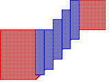
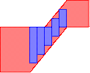
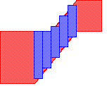

Pin and Blockage Fracturing
LEF 5.8 supports the routing of 45-degree geometries. Abstract Generator provides support for preserving the 45-degree geometries as it is. By default, the conversion of 45-degree geometries to rectilinear ones is disabled. The options to convert a 45-degree geometry into stair-stepped rectangles are available only if one or both of Fracture pins and Fracture blockages options are active.
Setting the Type of Stair Step Coverage
The Stair-step coverage option controls the degree to which stair-step blockages cover the 45-degree geometry. There are three settings available for this option: full, truncate, and partial.
-
With full stair-step coverage, the 45-degree geometry is completely obscured by blockage rectangles as shown below:
This ensures that no real violations are created. -
With truncate stair-step coverage, the blockage rectangles are fully enclosed by the original 45-degree geometry as shown below.
You might use this setting when there is another geometry close enough to cause violations with any stair-steps that extend outside the 45-degree edges. -
With partial stair-step coverage, the blockage rectangles only partially cover the 45-degree geometry as shown below.
This frees up more routing resources for the PR tools but because some of the real 45-degree geometry is exposed, there is an increased risk of violations.
In some situations, the stair-stepping procedure can create rectangles which introduce violations with neighboring geometry. This effect can be minimized by using a smaller step size or by using truncate rather than partial or full settings. Additional problems can be introduced by using the truncate setting. The 45-degree geometry might be inadequately covered, and violations between wiring and 45-degree geometry would go undetected because of the modeling in the abstract. Again, using smaller stair-step distance can minimize this.
Setting the Width of the Stair Step
In the Stair-steps width field, you can specify the width of the blockage geometry to be created. Enter a value greater than zero. There is no minimum width restriction. The default value is half the minSpacing of the Metal1 layer. If the minSpacing of Metal1 layer is not found in the technology data, then the default value is set to 5.
Related Topics
Return to top